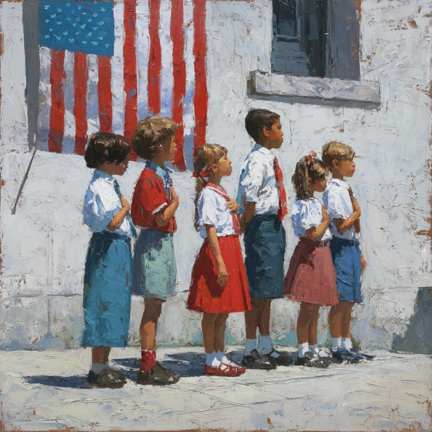

My greatest criticism of this country, in short, is the state of public education. I grew up lucky — in Massachusetts, where the schools are often said to be the best in the nation. But even there, the luck was uneven. On the South Shore, where I lived, school budgets were tight in a way they were not in Boston or on the wealthier North Shore. I can't speak for western Massachusetts or for rural New England. I can only say that, even in the "best" state in the country, money decided a great deal about what a child's education looked like. That, to me, is the heart of the problem — and the reason I believe we can fix it, if we choose to.
We have underfunded our schools for decades
My honest belief is that we have not seriously invested in education in this country in over forty years. That is not just a feeling. By one careful estimate, the United States underfunds its public schools by roughly $150 billion every year, and the deepest shortfalls land on the students who already have the least.1 This is part of a longer story of neglect of ordinary people: for more than four decades, the pay of typical workers has badly lagged behind the value they produce, even as the economy has grown.2 We have had the money. We have chosen, again and again, to spend it elsewhere.
What shocks me most is how willingly we neglect the next generation's education in favor of short-term consumption. Even as a young child, before I had the words for it, I felt like I was living in a kind of post-consumerist haze. It is hard to watch a society that can find money for almost anything decide that its own children's schooling is the thing it cannot quite afford.
How we lost our way: testing over learning
A big part of the damage, in my view, came from the No Child Left Behind Act of 2001. Its goals were not cruel — it was meant to hold schools accountable for every child, especially those who had been left behind before. But by tying a school's funding and reputation to a handful of standardized test scores, it pushed schools to narrow what they taught down to whatever the test measured. Critics warned at the time that the law gave teachers every incentive to "teach to the test" and to quietly drop subjects that weren't being tested, and that some schools went to troubling lengths to protect their scores.3 Instead of a race to teach children well, we got something closer to a race to pass an exam.
And the scores still fell. The Nation's Report Card — the federal government's own long-term measure of how students are doing — shows reading and math achievement that has been sliding since around 2012, with reading scores for thirteen-year-olds now back where they were in the 1970s.4 Decades of focusing on the test did not even deliver the one thing it promised.
A system that funds children unequally
The deeper injustice is how unequally we pay for children's schooling. Because public schools lean so heavily on local property taxes, a child's education is tied to the wealth of the few blocks around their home. Districts serving the most students of color receive about $2,700 less per student, on average, than districts serving the fewest — a gap driven in large part by that reliance on local property wealth.5 Income inequality is nowhere starker, or more consequential, than in who gets a good education and who does not.
This is also why I worry about privatizing education. The push to move public money into private and voucher programs rests on the idea that the market will sort things out — and, underneath that, on an ideology that quietly treats wealth as a kind of moral worth. It rewards families whose needs are already met many times over, while the children of struggling families, who did nothing to deserve their circumstances, are left further behind. And the evidence does not even support the promise: studies of traditional voucher programs have found that students who used them often did worse on math tests than similar students who stayed in public school.6 We would be diverting scarce public money toward a worse result.
I don't think the people at the top feel the stakes the way the rest of us do. They believed they were safe before 2008, too — and then the financial crisis arrived, and more than six million American households lost their homes to foreclosure.7 People who felt secure lost everything. Treating a good education as a luxury for those who can pay isn't just unfair; it's a bet that the security of the comfortable will hold forever. History suggests it won't.
I saw this gap up close. I worked as a groundskeeper at Tabor Academy in Marion, Massachusetts — a school known for sending students to Division I athletics and to Ivy League colleges. Boarding tuition there now tops $82,000 a year.8 The students sail regularly, live in beautiful dorms, and study on a classic New England liberal-arts campus. By fourteen, fresh out of middle school, they are essentially living a college life with extras. I had no idea a place like that existed so close to where I'd spent most of my life. It was nothing like Silver Lake Regional, the public high school I knew, where students wrestled with far more tangible, material problems. The two schools were a short drive apart and a world apart.
The problem was never the kids
Through all of this, I keep coming back to one conviction: there is no such thing as a child who can't learn. Children are far more capable than we give them credit for, and when we decide otherwise, the failure is ours, not theirs. Education is a nearly limitless gift to give a young person. We have the information, the science, the literature — all of it — and our only real job is to make sure it reaches them, and to make the reaching of it genuinely enjoyable.
We already know this can be done. Montessori education, for one, has a strong research record: a systematic review of decades of studies found that, on the whole, Montessori students outperform their peers on a range of academic and social-emotional outcomes.9 My frustration with Montessori isn't the method — it's that most Montessori schools are private, concentrated in cities, and known mainly to affluent families. The approach could also be carried much further: updated software, a modernized curriculum, and stronger bridges into university research and graduate study. Good ideas like this shouldn't stay locked behind a price tag.
My own memories tell the same story from the other direction. For a stretch of my schooling I felt worn down by my teachers; I switched to a private Catholic school, which was better but still hard. It wasn't until high school, back in public school, that I had my first young, male teachers — and I fell in love with their classes in physics, history, algebra, and computer science. My mother was a children's librarian, always thinking about the kids; I know they loved her story times. Those are the kinds of memories I want every child to have. Not only because it is the practical and right thing to do, but because the next generation deserves our love and our trust.
What we should actually do
So I want to end on what I think we should build toward, rather than only on what's broken. We should fund public schools fully and fairly, and stop tying a child's opportunities to the property values of their neighborhood — which means leaning less on local property taxes and more on broad, equitable funding, with the most help going to the students who need it most. We should measure schools by whether children are actually learning and thriving, not by a single test score, so that teachers can teach the whole of a subject again. We should keep public money in public schools rather than draining it into private alternatives that haven't delivered. We should make the best ideas — like Montessori's — available to ordinary families, not just wealthy ones. And we should pay for all of it the way a serious country would: in part through fair taxes on the very wealthiest, reinvested especially in the rural and low-income communities that have been shortchanged the longest.
I'd give two reasons. The first is simply that it's right. The second is more practical: communities that are invested in flourish for generations, and they return that investment many times over as more of their children get a real chance to succeed. When people are cared for, they do remarkable things. If we can't trust in that, then we don't really trust in one another.
Our curriculum is aging, and the local and state structures meant to steward public education have, in too many places, fallen short for decades. That has to change. This is my largest criticism of the country I love — and I make it precisely because I believe the next generation is worth fighting for. I'll leave it there for now.
Notes
- "TCF Study Finds U.S. Schools Underfunded by Nearly $150 Billion Annually," The Century Foundation, accessed June 4, 2026, https://tcf.org/content/about-tcf/tcf-study-finds-u-s-schools-underfunded-nearly-150-billion-annually/. ↩
- "Wage Stagnation in Nine Charts," Economic Policy Institute, accessed June 4, 2026, https://www.epi.org/publication/charting-wage-stagnation/. ↩
- "A Past, Present, and Future Look at No Child Left Behind," American Bar Association, accessed June 4, 2026, https://www.americanbar.org/groups/crsj/resources/human-rights/archive/past-present-future-look-no-child-left-behind/. ↩
- "NAEP Long-Term Trend Assessment Results: Reading and Mathematics," National Center for Education Statistics, The Nation's Report Card, 2023, https://www.nationsreportcard.gov/highlights/ltt/2023/. ↩
- "Segregation and Resource Inequality Between America's School Districts," New America, accessed June 4, 2026, https://www.newamerica.org/insights/segregation-and-resource-inequality-between-americas-school-districts/executive-summary/. ↩
- "Research on School Vouchers Suggests Concerns Ahead for Education Savings Accounts," Brookings Institution, accessed June 4, 2026, https://www.brookings.edu/articles/research-on-school-vouchers-suggests-concerns-ahead-for-education-savings-accounts/. ↩
- "Starting Over: Michael Ohlrogge Tracks Post-Foreclosure Outcomes During the Great Recession," New York University School of Law, accessed June 4, 2026, https://www.law.nyu.edu/news/ideas/michael-ohlrogge-great-recession-foreclosures. ↩
- "Tuition & Financial Aid," Tabor Academy, accessed June 4, 2026, https://www.taboracademy.org/admissions/tuition-financial-aid. ↩
- Justus J. Randolph et al., "Montessori Education's Impact on Academic and Nonacademic Outcomes: A Systematic Review," Campbell Systematic Reviews, 2023, https://www.ncbi.nlm.nih.gov/pmc/articles/PMC10406168/. ↩
Bibliography
American Bar Association. "A Past, Present, and Future Look at No Child Left Behind." Accessed June 4, 2026. https://www.americanbar.org/groups/crsj/resources/human-rights/archive/past-present-future-look-no-child-left-behind/.
Brookings Institution. "Research on School Vouchers Suggests Concerns Ahead for Education Savings Accounts." Accessed June 4, 2026. https://www.brookings.edu/articles/research-on-school-vouchers-suggests-concerns-ahead-for-education-savings-accounts/.
Economic Policy Institute. "Wage Stagnation in Nine Charts." Accessed June 4, 2026. https://www.epi.org/publication/charting-wage-stagnation/.
National Center for Education Statistics. "NAEP Long-Term Trend Assessment Results: Reading and Mathematics." The Nation's Report Card, 2023. https://www.nationsreportcard.gov/highlights/ltt/2023/.
New America. "Segregation and Resource Inequality Between America's School Districts." Accessed June 4, 2026. https://www.newamerica.org/insights/segregation-and-resource-inequality-between-americas-school-districts/executive-summary/.
New York University School of Law. "Starting Over: Michael Ohlrogge Tracks Post-Foreclosure Outcomes During the Great Recession." Accessed June 4, 2026. https://www.law.nyu.edu/news/ideas/michael-ohlrogge-great-recession-foreclosures.
Randolph, Justus J., et al. "Montessori Education's Impact on Academic and Nonacademic Outcomes: A Systematic Review." Campbell Systematic Reviews, 2023. https://www.ncbi.nlm.nih.gov/pmc/articles/PMC10406168/.
Tabor Academy. "Tuition & Financial Aid." Accessed June 4, 2026. https://www.taboracademy.org/admissions/tuition-financial-aid.
The Century Foundation. "TCF Study Finds U.S. Schools Underfunded by Nearly $150 Billion Annually." Accessed June 4, 2026. https://tcf.org/content/about-tcf/tcf-study-finds-u-s-schools-underfunded-nearly-150-billion-annually/.